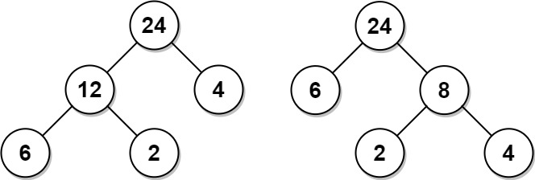

动态规划
300. 最长递增子序列【重要】
题目
给你一个整数数组 nums ，找到其中最长严格递增子序列的长度。
例如，[3,6,2,7] 是数组 [0,3,1,6,2,2,7] 的子序列。
- 思路
这里暴力DP在一些复合困难题中会超时，比如354. 俄罗斯套娃信封问题。因此只记录二分查找法。

将数组nums按蜘蛛纸牌的方式，放置在不同的牌堆中，每次放置必须保证这个牌尽可能放在靠前（即左边）的牌堆中。最后得到的牌堆数就是最长子序列的长度（证明不会）将二分查找法，用在寻找这个数的左边界上，来提速。
二维DP
115. 不同的子序列【重要】
题目
给定一个字符串 s 和一个字符串 t ，计算在 s 的子序列中 t 出现的个数。
字符串的一个 子序列 是指，通过删除一些（也可以不删除）字符且不干扰剩余字符相对位置所组成的新字符串。（例如，”ACE” 是 “ABCDE” 的一个子序列，而 “AEC” 不是）
eg：s=”bagg“,t=’’bag”, return 2，因为s中有2个t的不同子序列。
思路
第一步：明确dp的含义。
做dp的题只需要理解dp[i][j]的含义是什么，由什么推到出来即可。在这题中，令dp[i][j]的含义为s的前i个字符，包括第i个，也就是s[0...i-1]中有多少个t的前j个字符。
举个例子，s = “bagg”, t =”bag”，那么dp[3][3] = 1，因为s的前3个字符”bag”中，有1个t的前三个字符组成的子串” bag”，而dp[4][3] = 2,因为s的前四个字符”bagg”有2个t的前前三个字符”bag”组成的子串。第二步：写出状态转移方程：
下面解释一下这个状态方程，当执行到
dp[i][j]时：当
s[i-1]=t[j-1]时，有两种情况，对应着dp中相加的两项。分别为使用s[i-1]这个字符和不使用s[i-1]这个字符。
如果使用了s[i-1]那么dp[i][j]，即子序列数量 =dp[i-1][j-1]，因为当前检测的这两个字符相同，再加上这个字符的子序列数量是等于s[0....i-2]中t[0....j-2]的子序列数量的。
如果没有使用s[i-1]，dp[i][j]，即子序列数量 =dp[i-1][j],说明s[i-1]这个字符对于子序列数量没有帮助，等于s[0...i-2]中t[0···j-1]的子序列数量。当
s[i-1]!=t[j-1]时，s[i-1]这个字符肯定不能使用，同上，不使用s[i-1]
举例：比如s = “bag”,t = “bag”，
i = 2,j = 2; s[i-1] = a, t[j-1] = adp[2][2]=dp[1][1]+dp[1][2]，使用s中的“a”匹配，其子序列数量等于 “b”中 “b” 的子序列数量；不使用s中的”a”进行匹配，其子序列的数量等于”b”中”ba”的数量。第三步：确定初始状态
- 初始状态的定义需要根据状态转移方程得出，因为这里矩阵x轴放t，y轴放x。递推从左上方向右下方，上方向下方推进。因此我们要初始化的是第一行和第一列。根据定义得出：
- 第一行：0 ， 因为代表着
空串中有多少个t串构成的子序列 - 第一列：1，代表着
s串中有多少个空串构成的子序列 dp[0][0]：1，代表空串中有一个空串构成的子序列
- 第一行：0 ， 因为代表着
- 初始状态的定义需要根据状态转移方程得出，因为这里矩阵x轴放t，y轴放x。递推从左上方向右下方，上方向下方推进。因此我们要初始化的是第一行和第一列。根据定义得出：
第四步：迭代
for(int i = 0;i<dp.length;i++){
for(int j = 0;j<dp[i].length;j++){
if(s[i-1] == t[j-1]){
dp[i][j] = dp[i-1][j-1] + dp[i-1][j];
}else{
dp[i][j] = dp[i-1][j];
}
}
return dp[dp.length-1];
}
记忆化搜索写法
class Solution { |
139. 单词拆分【变式】
- 题目：
给你一个字符串 s 和一个字符串列表 wordDict 作为字典。请你判断是否可以利用字典中出现的单词拼接出 s 。注意：不要求字典中出现的单词全部都使用，并且字典中的单词可以重复使用。
输入: s = “leetcode”, wordDict = [“leet”, “code”]
输出: true
解释: 返回 true 因为 “leetcode” 可以由 “leet” 和 “code” 拼接成。
思路：
和上一题一样，只不过t变成了单词，而问题变成了s中有没有t组成的子序列。同样按照上面的四步
第一步：dp的含义：
这道题中，根据问题，dp[i]的含义可以表示为s[0….i-1]是否能够由所提供的单词构成，是一个boolean数组，true表示可以，false表示不可以。
第二步：状态转移方程
考虑dp[i]怎么由dp[0….i-1]推出。
如果dp[0…i-1]中有一个位置的值为true，假设这个位置的索引是x，那么我们就需要判断s[x…i-1]，即
s.substring(x,i-1)是否可以组成一个单词，如果可以组成，那么dp[i]就是true，写出状态转移方程。
注：这里dp[i]指的是s[0…i-1]，所以dp[x]=true表示s[0….x-1]可以组成单词，现在需要判断s[x,i-1]是否可以组成单词，所以是s.substring(x,i)。第三步：初始化
这里dp[0]必须为true(这里最后写错了)，不然dp的任何一个值都不可能为true。事实上，dp[0]指的是空串能否被dict中的单词组成。
第四步：迭代
for(int i = 0;i<dp.length;i++){
for(int x = 0;x<i;x++){
dp[i] = dp[i]||(dp[x] && wordDict.contains(s.substring(x,i)));
}
}
return dp[dp.length-1];
暴力DP过不了，优化的方法
滑动窗口
模版：
//设置一个双向队列Deque，里面存放nums的索引 |
239. 滑动窗口最大值
- 题目：
给你一个整数数组 nums，有一个大小为 k 的滑动窗口从数组的最左侧移动到数组的最右侧。你只可以看到在滑动窗口内的 k 个数字。滑动窗口每次只向右移动一位。
输入：nums = [1,3,-1,-3,5,3,6,7], k = 3
输出：[3,3,5,5,6,7]
解释：
滑动窗口的位置 最大值
[1 3 -1] -3 5 3 6 7 3
1 [3 -1 -3] 5 3 6 7 3
1 3 [-1 -3 5] 3 6 7 5
1 3 -1 [-3 5 3] 6 7 5
1 3 -1 -3 [5 3 6] 7 6
1 3 -1 -3 5 [3 6 7] 7
- 思路
设置一个双端队列，Deque<> window = new LinkedList<>()，这个双端队列中队首和队尾都可以出队。这个队列中的元素w[1],w[2]...w[n]遵循以下规则：nums[w[i]]>nums[w[j]] && w[i]<w[j]也就是说，这个队中存的是nums数组中的索引，且必须保证索引大，值小的数字，排在索引小，值大的数字后面。
举例：比如nums=[6,1,2,3,8]，window.size=2那么window的变化应该为：
[6]->[6,1]->[6,2]->[6,3]->[8] |
为什么这么设定？因为在滑动窗口滑动的过程中，队首元素可能会滑到窗口外，因此我们要选择一个候选人，使得队首元素滑出后，候选人接着成为队首。那么当前在窗口内的元素中，值越大的元素更应该成为候选人，在队中的排列更靠近队首。
明确Deque的定义后，我们要定义队列中的元素什么时候入队什么时候出队。当某个元素可以成为候选人的时候，就入队，当这个元素需要替换队列中的候选人的时候，就while循环，让那些比它差的候选人出队，最后让当前元素入队。
当队首元素滑出滑动窗口了之后，就将队首元素出队，让后面那个候选人当队首元素
- 代码
public int resolve(int[]nums,int k){ |
1696. 跳跃游戏 VI
- 题目
给你一个下标从 0 开始的整数数组 nums 和一个整数 k 。一开始你在下标 0 处。每一步，你最多可以往前跳 k 步，但你不能跳出数组的边界。也就是说，你可以从下标 i 跳到 [i + 1， min(n - 1, i + k)] 包含 两个端点的任意位置。你的目标是到达数组最后一个位置（下标为 n - 1 ），你的 得分 为经过的所有数字之和。请你返回你能得到的 最大得分 。
输入：nums = [1,-1,-2,4,-7,3], k = 2 |
- 思路，暴力DP的思路如下：
int[] dp = new int[nums.length]; |
- 滑动窗口解法：
因为同样的，这里我们只需要找到dp[i-k….i]中的最大值即可，因此用一个滑动窗口来维护这段最大值
状态压缩
一维数组变为两个常量，二维数组变为滚动数组dp[2][j]
309. 最佳买卖股票时机含冷冻期
题目：
给定一个整数数组prices，其中第 prices[i] 表示第 i 天的股票价格 。设计一个算法计算出最大利润。在满足以下约束条件下，你可以尽可能地完成更多的交易（多次买卖一支股票。卖出股票后，你无法在第二天买入股票 (即冷冻期为 1 天)。
注意：你不能同时参与多笔交易（你必须在再次购买前出售掉之前的股票）。
思路：
思路比较简单，直接看代码。注意压缩状态，滚动更新时，存储上一状态的地方
class Solution { |
路径问题【记忆化搜索dfs，dfs转dp，双dp数组】
固定起点，固定方向问题，
可以用一般的二维dp来做，可以优化空间复杂度。
滚动数组：
因为下一行的dp值仅与上一行有关，因此，我们只需要开辟dp[2][n]即可。获取并更新dp值时，用dp[i &1][j]来更新即可，这等同于d[i % 2][j]。优先队列：
1289. 下降路径最小和 II题目：给你一个 n x n 整数矩阵 arr ，请你返回 非零偏移下降路径 数字和的最小值。非零偏移下降路径 定义为：从 arr 数组中的每一行选择一个数字，且按顺序选出来的数字中，相邻数字不在原数组的同一列。
解法：将二维dp数组压缩成一个大小为n的优先队列。每次取头两个元素。分别是上一行中最小的两个值及它们的列索引。当下一行中，列索引与上一行中最小值的列索引相同时，需要用第二小的元素来更新。
记忆化搜索
使用一个memo数组来记录每一次递归的结果，如果有结果直接返回，不会进入dfs
dfs(i){ |
1575. 统计所有可行路径
题目：
给你一个 互不相同 的整数数组，其中 locations[i] 表示第 i 个城市的位置。同时给你 start，finish 和 fuel 分别表示出发城市、目的地城市和你初始拥有的汽油总量。每一步中，如果你在城市 i ，你可以选择任意一个城市 j ，满足 j != i 且 0 <= j < locations.length ，并移动到城市 j 。从城市 i 移动到 j 消耗的汽油量为 |locations[i] - locations[j]|，|x| 表示 x 的绝对值。
请注意， fuel 任何时刻都 不能 为负，且你 可以 经过任意城市超过一次（包括 start 和 finish ）。
请你返回从 start 到 finish 所有可能路径的数目。
由于答案可能很大， 请将它对 10^9 + 7 取余后返回。
思路：
- 记忆化搜索
难点在于定义basecase。做这种题的时候不要多想，直接看dfs的定义，从定义入手。
本题dfs的定义是：dfs(int[] location,int start,int end,int fuel)，代表从start位置到end位置，剩余汽油为fuel的情况下有多少路径数。
public int dfs(int[] location,int start,int end,int fuel){ |
优化：
考虑一个baseCase： 如果当前的汽油量无法到达任何一个location，那么就返回0
优化为：如果当前的汽油量无法一步到达终点，那么就返回0
int need = Math.abs(locations[start]-locations[finish]);//如果当前不能一步到达，那么就永远无法到达 |
dp
根据记忆化搜索，我们可以将
dfs翻译为状态方程：这里其实dfs的备忘录memo就是我们的dp数组。dp[i][fuel]表示：从i出发，剩余汽油fuel的情况下，到达finish有多少条路径。初始状态
根据记忆化搜索，我们知道初始状态是
dp[finish][fuel] = 1，状态
这里的状态是
fuel，和i。状态转移方程：
f[i][fuel] += f[k][fuel-need]，其中，k是从i能够到达的地点
代码
for(int i = 0;i<=fuel;i++){ |
1335. 工作计划的最低难度
题目：
你需要制定一份 d 天的工作计划表。工作之间存在依赖，要想执行第 i 项工作，你必须完成全部 j 项工作（ 0 <= j < i）。你每天 至少 需要完成一项任务。工作计划的总难度是这 d 天每一天的难度之和，而一天的工作难度是当天应该完成工作的最大难度。给你一个整数数组 jobDifficulty 和一个整数 d，分别代表工作难度和需要计划的天数。第 i 项工作的难度是 jobDifficulty[i]。返回整个工作计划的 最小难度 。如果无法制定工作计划，则返回 -1 。
思路：
【难点】状态转移方程：
dp[i][j] 表示第i+1天，需要完成前j个任务需要的工作难度。 |
- 翻译为记忆化搜索：
//dfs(i,j) 表示第i+1天，需要完成前j个任务需要的工作难度。 |
- 翻译为朴素dp
for (int i = 1; i < d; i++) { |
记忆化搜索分割矩形-华子笔试
1240. 铺瓷砖
题目：
分割一个nxm的矩形，最少需要用到多少块正方形瓷砖

输入：n = 2, m = 3 |
解答：
- 设一个大小为a的正方形，放置在
i，j处，将矩形分割为4块：Rect1 ,Rect2, Rect3, Rect4。分割子问题 dfs(n,m)的定义为：将大小为n x m矩形使用正方形分割需要用多少块。可以用memo消除重叠子问题
代码
class Solution { |
统计路径的个数
1301. 最大得分的路径数目
题目：
给你一个正方形字符数组 board ，你从数组最右下方的字符 ‘S’ 出发。你的目标是到达数组最左上角的字符 ‘E’ ，数组剩余的部分为数字字符 1, 2, …, 9 或者障碍 ‘X’。在每一步移动中，你可以向上、向左或者左上方移动，可以移动的前提是到达的格子没有障碍。一条路径的 「得分」 定义为：路径上所有数字的和。请你返回一个列表，包含两个整数：第一个整数是 「得分」 的最大值，第二个整数是得到最大得分的方案数，请把结果对 10^9 + 7 取余。如果没有任何路径可以到达终点，请返回 [0, 0] 。
输入：board = ["E23","2X2","12S"] |
思路：
正常dp即可，将’’X”字符处的dp值置为Integer.MIN_VALUE即可。主要是路径数怎么算。
路径数也用dp来做，开一个路径数的dp数组，这里有三个方向:dp[i+1][j+1],dp[i+1][j],dp[i][j+1] ,cnt[m-1][n-1]=1，如果三个方向的dp最大值相同，比如max = dp[i+1][j+1]=dp[i+1][j] ，那么cnt[i][j] =cnt[i+1][j+1]+cnt[i+1][j]。
优化：
因为是正方形，可以把二维dp数组平铺为一维的，加一个转化函数getIdx(i,j) return i*n+j。
树形DP
题目：
小偷又发现了一个新的可行窃的地区。这个地区只有一个入口，我们称之为 root 。除了 root 之外，每栋房子有且只有一个“父“房子与之相连。一番侦察之后，聪明的小偷意识到“这个地方的所有房屋的排列类似于一棵二叉树”。 如果 两个直接相连的房子在同一天晚上被打劫 ，房屋将自动报警。给定二叉树的 root 。返回 在不触动警报的情况下 ，小偷能够盗取的最高金额 。
eg:

输入: root = [3,2,3,null,3,null,1] |
思路：
- 分解子问题，使用memo避免重叠子问题
首先明确dfs的定义：dfs(TreeNode root)表示以root节点为偷窃起点，获取金额的最大值
class Solution { |
- 【省空间】自顶向下dp，用一个二维数组记录每个节点抢与不抢的最大值金额
dfs返回一个数组，0号位置是抢root，1号位置是不抢root。在后序位置能够获取这个节点的左右子树抢与不抢的最大值。
如果抢root，那么左右子树都不能抢，如果不抢root，那么左右子树抢不抢都行
class Solution { |
区间DP
1130. 叶值的最小代价生成树
题目：
给你一个正整数数组 arr，考虑所有满足以下条件的二叉树：
- 每个节点都有 0 个或是 2 个子节点。
- 数组 arr 中的值与树的中序遍历中每个叶节点的值一一对应。
- 每个非叶节点的值等于其左子树和右子树中叶节点的最大值的乘积。
在所有这样的二叉树中，返回每个非叶节点的值的最小可能总和。这个和的值是一个 32 位整数。
eg:

输入：arr = [6,2,4] |
思路：
确定方法：dp。可以将数组划分为两部分，建树。可以证明任何两个非空子数组都可以建成题目中的树。因此利用数组
arr建成一颗最小代价生成树这个问题可以拆分子问题：将数组拆分成两个子数组，两个子数组都是代价最小的树，那么整棵树代价最小。明确dp含义：
dp[i][j]表示当arr[i]到arr[j]为叶子结点建成的子树的最小代价。写出状态转移方程：
其中，mx(i,k)表示arr[i]到arr[k]这段子数组中的最大值，最后一项mx(i,k)*mx(k+1,j)表示根节点的值。
代码：
|